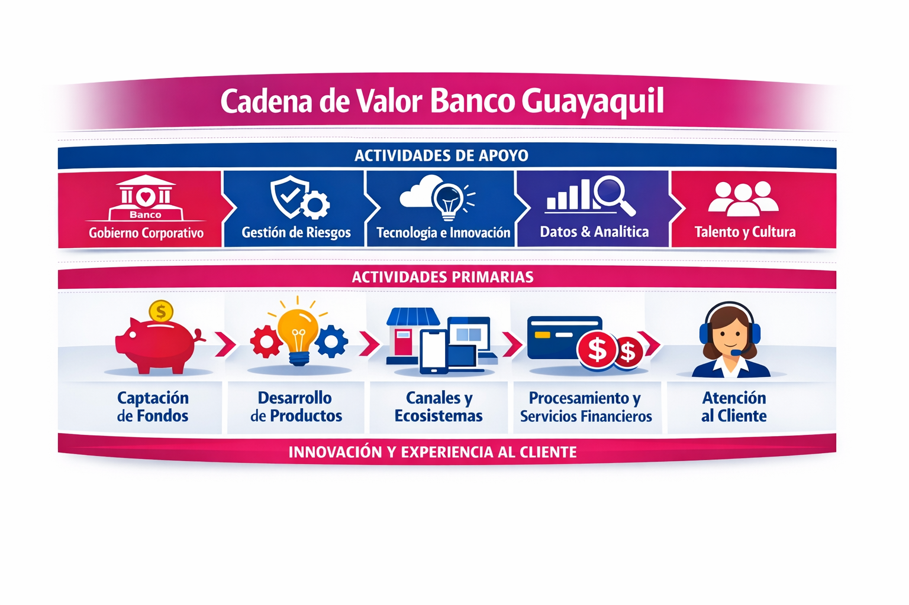

[GRI 2-6, 2-22, 2-23, 2-28, 3-1, 3-2 | SASB FN-CB-000.A, FN-CB-000.B | NIIF S1 — Estrategia]
Conectados con una banca más simple, digital, cercana y sostenible
Durante 2025 avanzamos con disciplina y foco estratégico, guiados por nuestro propósito —facilitar la vida de millones de ecuatorianos, cada día— y consolidamos el Plan Estratégico Conecta como la hoja de ruta que orienta nuestro crecimiento hacia 2028. Este plan articula nuestra estrategia en torno a tres pilares interdependientes: crecimiento, rentabilidad y experiencia, gestionados de manera integrada para fortalecer nuestra competitividad, eficiencia operativa y una experiencia de cliente diferenciadora.
La creación de valor en Banco Guayaquil se concibe desde una visión integral que combina desempeño financiero, solidez institucional, cercanía con nuestros clientes y una gestión responsable de los impactos económicos, sociales y ambientales asociados a nuestra actividad bancaria.
Visión global
[GRI 2‑6 | NIIF S1 — Estrategia]
Un entorno de recuperación y nuevas oportunidades
El año 2025 estuvo marcado por una recuperación relevante de la economía ecuatoriana, con un crecimiento del PIB de 3,8 % y un contexto de mayor estabilidad macroeconómica. Este entorno se acompañó de una mejora en las reservas internacionales y de una dinámica positiva del sistema financiero, caracterizada por el crecimiento de los depósitos y de la cartera de crédito.
En el ámbito internacional, la economía global mantuvo un ritmo de crecimiento moderado, con India liderando la expansión, China mostrando una desaceleración y América Latina con un desempeño más limitado. Para Ecuador, el principal desafío hacia adelante será transformar esta estabilidad en desarrollo sostenible, mediante disciplina fiscal, fortalecimiento de la confianza empresarial, diversificación productiva, impulso a sectores no petroleros y mayor inversión privada.
Tendencias del entorno 2025 y nuestra respuesta
| Tendencia del entorno | Dato clave 2025 | Respuesta de Banco Guayaquil |
|---|---|---|
| Recuperación económica local | PIB Ecuador: 3,8 % | Mayor acompañamiento a personas, empresas y microempresarios |
| Sector externo resiliente | Superávit comercial: US$ 5,796 MM | Fortalecimiento de servicios para comercio exterior |
| Mayor liquidez sistémica | Reservas internacionales: US$ 9,795 MM | Gestión prudente de liquidez y fondeo |
| Menor riesgo país | 492 puntos a diciembre 2025 | Mejores condiciones para crecimiento e inversión |
| Crecimiento de la banca privada | Depósitos +14,2 %; cartera +12,2 % | Estrategia de crecimiento con rentabilidad y prudencia |
| Clientes más digitales | Mayor uso de canales digitales | Omnicanalidad, autoatención y experiencia digital |
Plan Estratégico Conecta
[GRI 2‑6 | NIIF S1 — Estrategia | SASB FN‑CB-000.A, FN‑CB-000.B]
Crecer vinculando a nuestros clientes a través de la experiencia
El 2025 marcó el segundo año de ejecución del Plan Estratégico Conecta, consolidando la transformación iniciada en 2024 y escalando hacia una visión customer centric que permea a toda la organización. Los resultados por pilar (crecimiento, rentabilidad y experiencia) evidencian avances sostenidos y refuerzan el rumbo trazado hacia 2028.
El 2025 representó el segundo año de ejecución del Plan Estratégico Conecta, consolidando la transformación iniciada en 2024 y avanzando hacia una organización plenamente centrada en el cliente. Esta evolución permea a toda la institución y se refleja en avances sostenidos en los tres pilares estratégicos, reforzando el rumbo definido hacia el horizonte 2028.
Propósito
Facilitar la vida de millones de ecuatorianos, cada día.
Plan Conecta
Crecer vinculando a nuestros clientes a través de la experiencia.
Pilares estratégicos: Crecimiento, Rentabilidad y Experiencia
Resultados clave por pilar estratégico 2024 - 2025
| Pilar | Objetivo | Indicador | 2024 | 2025 | Variación |
|---|---|---|---|---|---|
| Crecimiento | Liderar en crecimiento y vinculación | Cartera bruta1 | 12,54 % | 13,22 % | +0,69 pp |
| Depósitos1 | 12,32 % | 12,73 % | +0,41 pp | ||
| Rentabilidad | Crecer rentablemente | ROE | 16,68 % | 19,37 % | +2,69 pp |
| Experiencia | Diferenciarnos a través de la experiencia | NPS | 62 pts | 64 pts | +2 pts |
1. Participación de mercado.
Nuestra visión y aspiración estratégica (horizonte 2028)
[GRI 2‑6 | NIIF S1 — Estrategia]
Nuestra aspiración de largo plazo es consolidarnos como una institución financiera referente en América Latina, reconocida por la solidez de su desempeño, la calidad de su gestión, la cercanía con sus clientes y la generación de orgullo interno en nuestros equipos.
Transformación: cómo habilitamos la estrategia
[GRI 2‑6 | NIIF S1 — Estrategia]
La transformación en Banco Guayaquil trasciende la adopción de tecnología. Implica una evolución integral en la forma en que trabajamos, tomamos decisiones, diseñamos soluciones y generamos valor para nuestros clientes y la sociedad.
Nuestro enfoque se articula en cinco frentes estratégicos orientados a alinear personas, procesos y tecnología:
Un modelo de operación sin fricciones, que elimina silos y organiza segmentos, productos y tecnología alrededor del cliente.
Una estrategia de plataformas, enfocada en una arquitectura tecnológica flexible y escalable.
Diseño de experiencia y producto centrado en el cliente, guiado por datos, diseño y experimentación.
Toma de decisiones basada en inteligencia, incorporando analítica avanzada e inteligencia artificial.
Excelencia en ingeniería y entrega continua, asegurando una ejecución consistente, eficiente y sostenible.
Este enfoque nos permite priorizar inversiones, remover cuellos de botella, acelerar la innovación y desarrollar equipos de alto desempeño capaces de sostener la transformación en el tiempo.
Modelo de negocio y cadena de valor
[GRI 2‑6 | SASB FN‑CB-000.A, FN‑CB-000.B | NIIF S1 — Estrategia]
Operamos como un banco universal con presencia nacional y una oferta integral de productos y servicios para personas, microemprendedores, pymes, empresas y corporaciones. Nuestro modelo de negocio se estructura en una cadena de valor integrada que articula actividades de apoyo y actividades primarias para facilitar el acceso y uso de soluciones financieras en todo el país.
Las actividades de apoyo incluyen infraestructura física y tecnológica, gestión integral de riesgos, tecnología y datos, así como la gestión del talento y la cultura. Estas capacidades habilitan las actividades primarias, que comprenden la captación de recursos, el diseño y provisión de productos financieros, la gestión multicanal y los servicios transaccionales, como pagos, transferencias, tarjetas, remesas y soluciones de tesorería.
Este modelo integrado nos permite operar de manera coherente en canales físicos y digitales, garantizando cobertura en las 24 provincias del Ecuador, sin exclusiones geográficas en la prestación de productos y servicios durante el período reportado.

Clientes, mercados y relaciones de largo plazo
[GRI 2‑6, 3‑3 | SASB FN‑CB-000.A, 000.B | NIIF S1 — Estrategia]
Nuestra estrategia prioriza la construcción y profundización de relaciones de largo plazo con nuestros clientes, más allá del acceso inicial a productos financieros. Atendemos a personas, microempresarios y empresas mediante segmentos diferenciados —masivo, microfinanzas, preferente, pyme, empresarial, corporativo e institucional—, ofreciendo soluciones de crédito, ahorro, inversión, seguros, medios de pago y servicios transaccionales.
Este enfoque responde a brechas estructurales del sistema financiero ecuatoriano, especialmente en materia de inclusión financiera, acceso al crédito formal, educación financiera y uso de canales digitales. Frente a este contexto, avanzamos hacia un modelo omnicanal que combina la cercanía de la atención presencial con la eficiencia, disponibilidad y escalabilidad de las soluciones digitales, en línea con las estrategias nacionales de inclusión y educación financiera.
Mercados atendidos y portafolio de productos y servicios por segmento
| Mercados atendidos / grupos de clientes | Productos y servicios |
|---|---|
| Personas y microfinanzas | Cuentas, ahorro e inversión - Cuentas de ahorro - Cuenta corriente - Cuenta Amiga - Ahorro Meta - Pólizas de acumulación / inversión Tarjetas y medios de pago - Tarjeta de débito Mastercard física y virtual - Tarjetas de crédito American Express, Mastercard y Visa - Tarjeta LATAM Pass Banco Guayaquil - Avances en efectivo y servicios asociados a tarjetas Financiamiento - Multicrédito - Casafácil - Autofácil - Crédito educativo - Microcrédito para el fortalecimiento de pequeños negocios - Crédito Terra, como alternativa de financiamiento orientada a iniciativas con criterios ambientales y sociales aplicables Seguros y servicios complementarios - Seguro de Desgravamen - Seguro de Cesantía - Seguro de Vehículos - Seguro de Vivienda - Seguro Mi Negocio Protegido, dirigido a microfinanzas - Avalúos Servicios transaccionales y canales - App y Banca Virtual - Pagos de servicios, recaudos, impuestos y matriculación vehicular - Transferencias nacionales, a otros bancos y al exterior - Giros y remesas nacionales e internacionales - Divisas - Servicios de token y cheques - Depósitos y retiros - Cajeros automáticos - Pago a terceros - Corresponsales no bancarios / Banco del Barrio - Cheques al exterior - Custodia de valores - PeiGo como billetera digital respaldada por Banco Guayaquil |
| Empresas y cadena de valor | Cuentas, ahorro e inversión empresarial - Cuenta corriente empresarial - Cuenta de ahorros empresarial - Ahorro Inversión Empresas - Pólizas de acumulación / inversión Tarjetas y soluciones corporativas - American Express Business - Visa empresarial - Tarjeta corporativa - Amex Business Link Financiamiento empresarial y sostenible - Crédito para capital de trabajo - Crédito Capital de Inversión / activos fijos productivos - Crédito agrícola - Crédito inmediato para necesidades de liquidez - Confirming para facilitar el pago a proveedores - Crédito a distribuidores - Crédito Terra, orientado al financiamiento de actividades productivas con criterios de sostenibilidad Comercio exterior y tesorería - Fianzas y avales - Cartas de crédito de importación y exportación - Cobranzas de importación y exportación - Línea de crédito del exterior: BNDES - Corresponsales - Compra y venta de monedas - Transferencias al exterior Servicios transaccionales y canales empresariales - Banca Empresas / App Banca Empresas - Canales digitales empresariales - Pago de nómina - Pago a terceros - Recaudaciones y recaudación multicanal - Débitos automáticos - Depósito electrónico de cheques - Redicheque - Cash Today - Facturación electrónica Soluciones para comercios y servicios especializados - Portal de comercios - Cobros con tarjetas - Link de pago - SIAD - Facturación de combustible - Crédito Nómina Empresa y Crédito Nómina Empleado - Pago a bananeros |
Cultura organizacional como motor de creación de valor
[GRI 2‑6, 2‑23 | NIIF S1 — Estrategia]
La ejecución de nuestra estrategia se sustenta en la cultura organizacional “Soy Magenta”, que actúa como un habilitador transversal del modelo de negocio. Esta cultura se basa en principios de cercanía, sencillez y transparencia, y en una filosofía de empatía bancaria que orienta nuestra forma de trabajar y relacionarnos.
Comportamientos Magenta
Facilitamos la vida de las personas.
Escuchamos activamente y aprendemos.
Hacemos brillar a nuestro equipo.
Actuamos con autonomía y responsabilidad.
Aprendemos del error para innovar.
Somos empáticos y auténticos.
Desarrollamos nuestro talento más allá del cargo.
Sostenibilidad transversal a la estrategia
[GRI 2‑6, 2‑22 | NIIF S1 — Estrategia]
En Banco Guayaquil entendemos la sostenibilidad como un componente transversal de nuestra estrategia y de nuestra forma de hacer banca. Nuestra estrategia de sostenibilidad integra los temas ambientales, sociales y de gobernanza más relevantes para el Banco y nuestros grupos de interés. Está alineada con la Agenda 2030, los Objetivos de Desarrollo Sostenible, los Principios de Pacto Global de las Naciones Unidas, el Acuerdo de París, los Principios de Banca Responsable de UNEP FI y el Plan Estratégico Conecta.
Pilares de la Estrategia de Sostenibilidad: enfoque de gestión y valor creado
| Pilar | Enfoque | Valor creado |
|---|---|---|
| Gobernanza y ética | Gestión transparente, cumplimiento, ética y rendición de cuentas | Confianza institucional y sostenibilidad del negocio |
| Conexión con el cliente | Experiencia, cercanía, digitalización y escucha activa | Relaciones de largo plazo y mayor satisfacción |
| Cultura financiera y acceso a la banca | Inclusión financiera, educación financiera y acceso a productos adecuados | Mayor bienestar y resiliencia financiera |
| Financiamiento e inversión sostenible | Productos y financiamiento con criterios ambientales y sociales | Apoyo a una economía más sostenible |
| Compromiso interno | Diversidad e inclusión, desarrollo y bienestar del colaborador, responsabilidad compartida con proveedores y gestión de la huella ambiental directa. | Cultura interna responsable, con equipos comprometidos, proveedores alineados y una operación más consciente de su impacto. |
Doble materialidad como base de la estrategia de sostenibilidad
[GRI 3-1, 3-2 | NIIF S1 — Estrategia]
Consolidamos nuestra estrategia de sostenibilidad a partir de la actualización del análisis de doble materialidad, que integra la materialidad de impacto y la materialidad financiera para identificar y priorizar los asuntos ambientales, sociales, económicos y de gobernanza más relevantes para el Banco y sus grupos de interés.
El proceso incluyó revisión de ejercicios previos, benchmarking sectorial, análisis normativo y consulta a grupos de interés, con la participación de 556 representantes. Como resultado, se identificaron 15 asuntos materiales articulados con nuestros pilares estratégicos y el Plan Estratégico Conecta.
Los resultados evidencian que los asuntos altamente prioritarios para Banco Guayaquil —rendimiento económico y financiero; privacidad, protección de datos y ciberseguridad; bienestar y salud de los empleados; calidad y transparencia; gobierno, ética y anticorrupción; y conexión con el cliente— constituyen ejes centrales para la resiliencia del negocio, la gestión de riesgos y la creación de valor de largo plazo.
Este análisis confirma que la sostenibilidad es un componente transversal de nuestra estrategia y orienta la toma de decisiones, la priorización de iniciativas y la comunicación con nuestros grupos de interés.
El detalle se encuentra expuesto en el Anexo I.
Compromisos globales que orientan nuestra gestión
[GRI 3‑1, 2‑23, 2‑28 | NIIF S1 — Estrategia]
Nuestra estrategia de sostenibilidad se articula en torno a compromisos e iniciativas globales que nos proveen marcos de referencia para gestionar nuestros impactos, fortalecer la gobernanza y rendir cuentas con transparencia.
Desde 2013 formamos parte del Pacto Global de las Naciones Unidas, iniciativa que promueve la adopción de principios universales en derechos humanos, estándares laborales, medio ambiente y lucha contra la corrupción. En Banco Guayaquil, estos principios no son una declaración formal: los integramos activamente en nuestra estrategia y en la toma de decisiones.
Del mismo modo, hemos identificado los Objetivos de Desarrollo Sostenible (ODS) donde podemos generar una contribución significativa, priorizando aquellos en los que nuestras operaciones, productos, servicios, financiamiento, relacionamiento con grupos de interés y gestión responsable de riesgos tienen mayor potencial de impacto positivo. Alineados con el SDG Compass, los ODS nos sirven como brújula para orientar prioridades, medir avances y comunicar resultados de manera clara y verificable.
El avance frente a los Principios del Pacto Global se presenta en el Anexo II, mientras que el detalle de nuestra contribución a los ODS se presenta en el Anexo III.
Principios de Banca Responsable
[GRI 2‑23 | NIIF S1 — Estrategia]
Somos signatarios de los Principios de Banca Responsable (PBR) de UNEP FI desde 2019. En este marco, realizamos un análisis de impactos de nuestra cartera de crédito que nos permitió definir objetivos orientados a inclusión y salud financiera, desarrollo productivo y mitigación del cambio climático.
Objetivos de impacto bajo Principios de Banca Responsable: áreas vinculadas y ODS relacionados
| Objetivo | Áreas de impacto vinculadas | ODS relacionados |
|---|---|---|
| 1. Ofrecer a las empresas y los emprendedores el capital necesario, de manera que puedan operar y atender las inversiones que requieran | Empleo, Economías inclusivas y saludables, Convergencia económica | ODS 8 y 9 |
| 2. Apoyar en que la población disponga de los productos pertinentes de ahorro y crédito | Economías inclusivas y saludables, Convergencia económica | ODS 1, 5 y 10 |
| 3. Mitigar las emisiones de gases de efecto invernadero de los edificios principales de Banco Guayaquil, correspondientes a los alcances 1, 2 y 3, mediante la implementación de iniciativas orientadas a la reducción de emisiones | Aire, Mitigación del cambio climático | ODS 13 |
| 4. Promover la inclusión financiera y profundizar relaciones de valor que fortalezcan la salud y el bienestar económico de nuestros clientes | Economías inclusivas y saludables | ODS 5 y 8 |
| 5. Fortalecer la resiliencia climática de los clientes del Banco, apoyando su capacidad de identificar y gestionar los riesgos climáticos relevantes para su actividad y su acceso a soluciones de financiamiento verde que potencien su adaptación y mitigación climática1 | Energía, Mitigación del cambio climático | ODS 12 y 13 |
1. Considerando los resultados del desarrollo de nuestra Estrategia de Cambio Climático, las conclusiones iniciales del Diagnóstico de sensibilidad ambiental y social de nuestra cartera comercial, la retroalimentación de UNEP FI, y, en línea con el pilar de Financiamiento e inversión sostenible de nuestra Estrategia de Sostenibilidad, en 2025 definimos un quinto objetivo de banca responsable.
Al respecto, en el Anexo IV reportamos nuestros avances en los PBR con corte a diciembre de 2025. En los capítulos siguientes del reporte se profundiza en cómo la estrategia del Banco se materializa en resultados concretos, se gestiona mediante políticas, procesos y métricas, y se adapta a los riesgos y oportunidades del entorno, con una mirada de largo plazo orientada a construir un Banco Guayaquil preparado para el futuro.